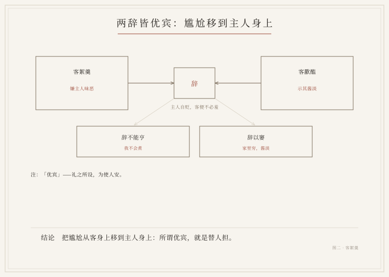

曲礼上 · 一·七十二 · 第 70 课
客人若在羹里调味，主人就辞谢说「我不会煮」；客人若喝肉酱，主人就辞谢说「家里穷，酱没做好」。两种辞，都是替客人留面子。
说什么事：客絮羹，主人辞不能亨。客歠醢，主人辞以窭。
落在哪一层：仪。上节戒客之失，此节讲主之辞。
为何编在此位：一·七十一戒「絮羹」「歠醢」，此节接着讲：客既失礼，主人如何接。
【经】客絮羹，主人辭不能亨。客歠醢，主人辭以窭。
【注】優賓。亨，煮也。窭，貧也。
优宾 注二字是全节之目：优，宽也；宾，客也。主人之辞，为宽客。
辞不能亨 疏：「亨，煮也。若客失礼而絮羹，则主人宜有优宾之辞谢之，云己家不能亨煮，故羹味不调适也。」
辞以窭 疏：「窭，无礼也。若客失礼而歠醢，则主人亦致谢，云主人作醢淡而无盐，故可歠也。」又引《诗》「终窭且贫」，毛云「窭，无礼也」。
两辞皆优饶于宾 疏语。两辞都不是责客，是把责任归到自己身上。
客人若在羹里添调料，主人就辞谢说「我不会煮」；客人若喝肉酱，主人就辞谢说「家里穷，酱做得淡」。
一节两句，句句是主人自贬。客失礼，主人不责，反说自己不能、自己穷。礼的妙处在此：把尴尬从客身上移到主人身上，客便不必羞。所谓「优宾」，就是替人担。
第一层 不责客 客已失礼，若主人指出，则一席皆僵。主人之辞，先把话说在自己这边，客便可顺势而下。
第二层 辞不能亨 把「味不调」归为「我不会煮」，是替客找一个不必负责的理由。此辞最见分寸：不说客多事，只说己无能。
第三层 辞以窭 把「酱淡」归为「家贫」，又让一层。贫不是荣，然在此处是护客的盾。注「窭，贫也」，疏兼取「无礼」之义。
第四层 优宾 注二字可作一切待客之礼的总纲：礼之所设，为使人安。凡仪节，若使人不安，则失其本。
与今日何干 今人待客，客若嫌菜淡，主人常说「今天手生」「家里没备」——正是此两辞。礼不是古人的客套，是替人留余地的技术。
| 左 | 右 |
|---|---|
| 客絮羹 | 就器中调盐梅 |
| 主人辞不能亨 | 归过于己：我不会煮 |
| 客歠醢 | 饮肉酱，示其淡 |
| 主人辞以窭 | 归因于贫：家里没备 |
| 优宾 | 宽客，不责；把尴尬移到主人身上 |
画案上两只器并置：左为一只羹器，器沿内侧有一小撮新添的盐粒未化；右为一只醢器，器口有饮过的浅痕。两器之间放一只空的小碟，碟心干净。不画手、不画人、不写文字。赭色只在羹器耳与盐粒。
